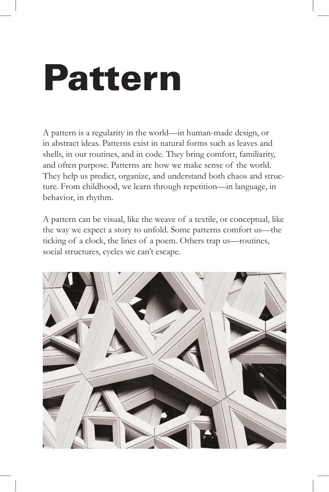
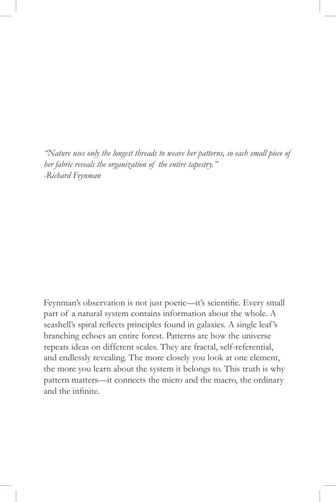
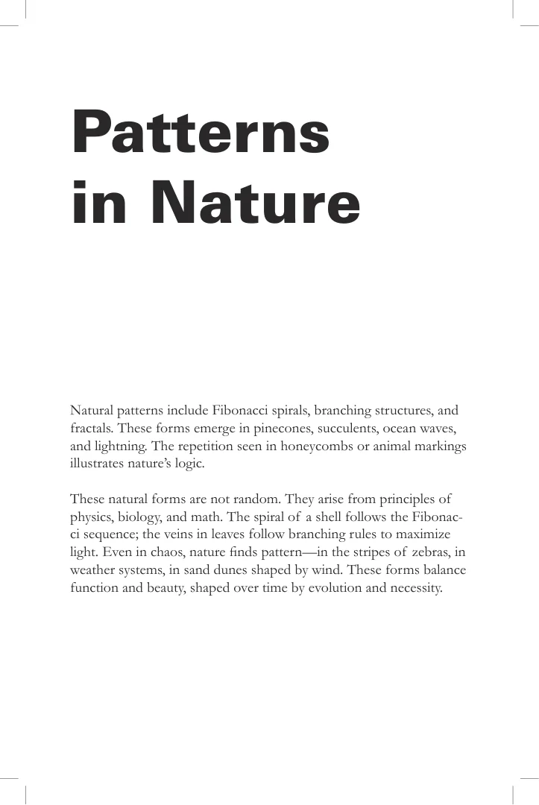
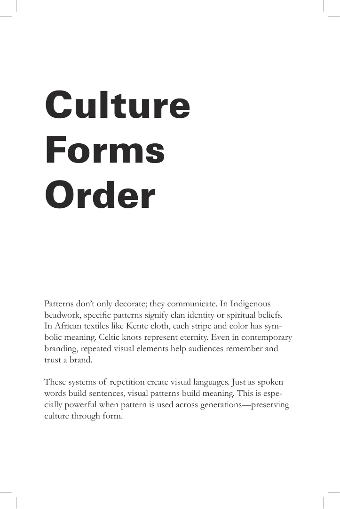
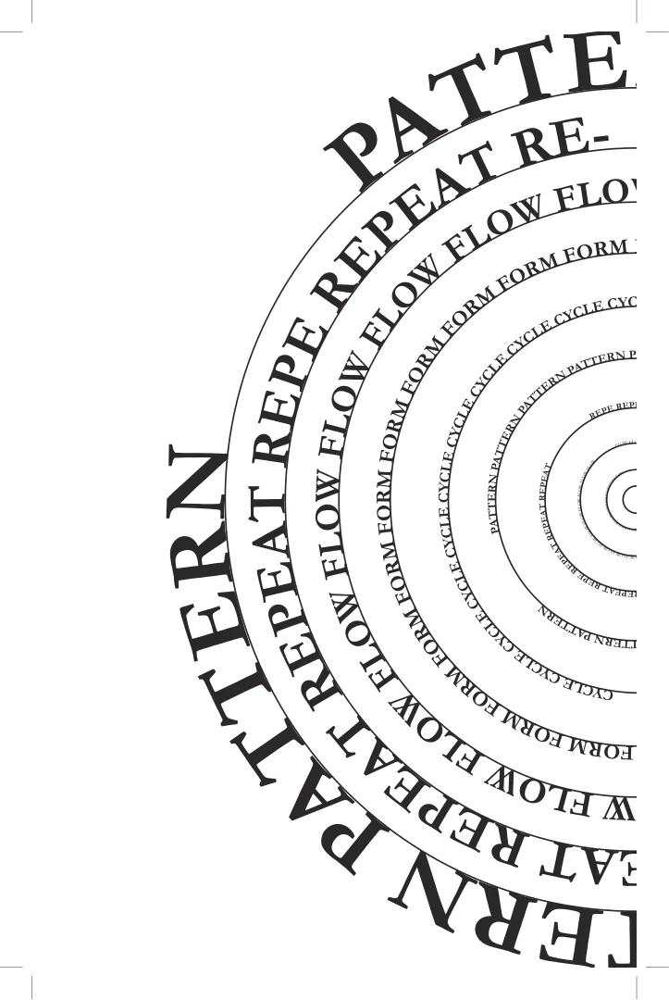
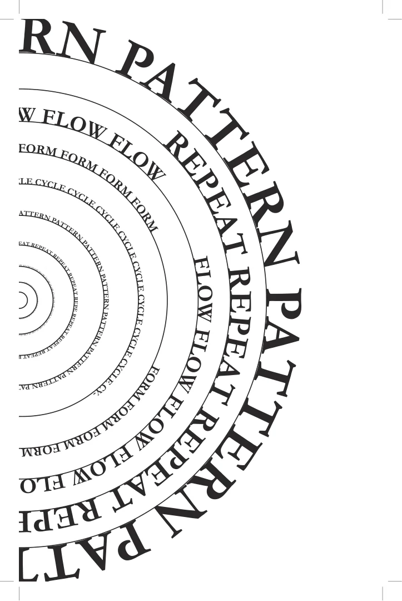
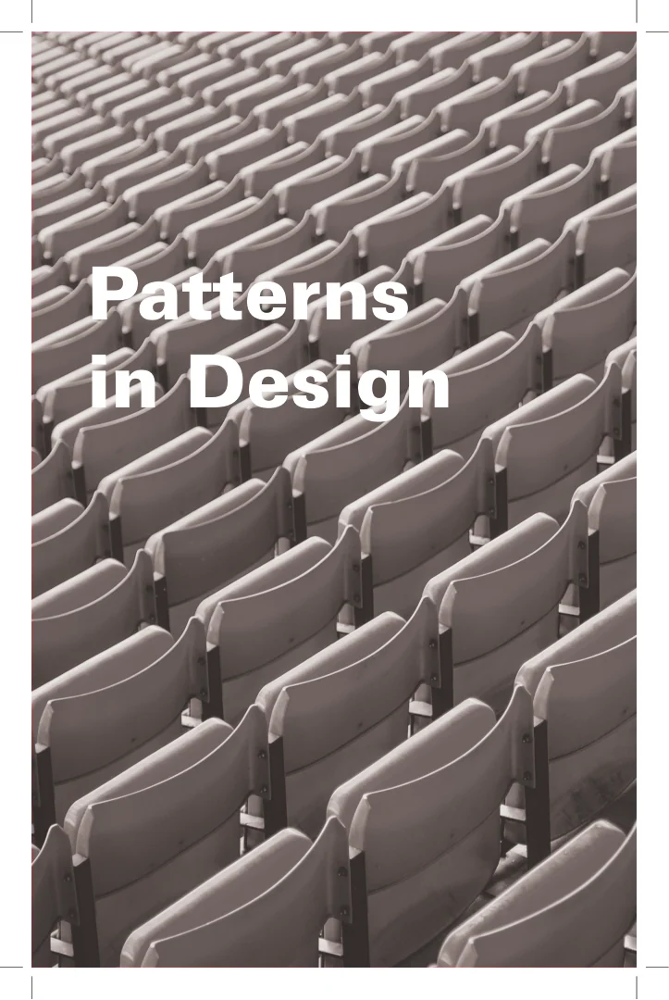
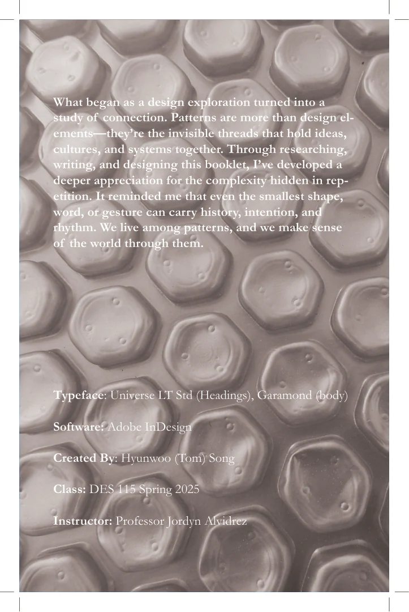
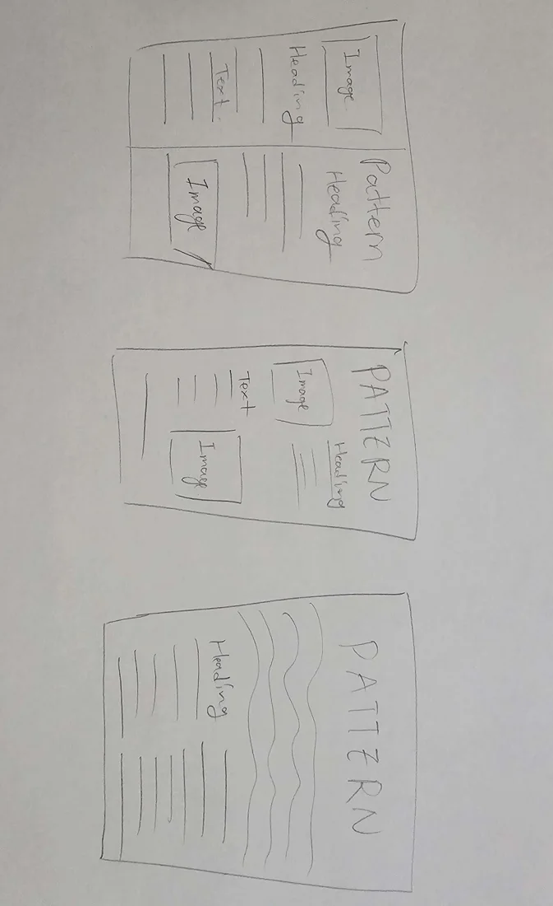

DES 115 · TYPOGRAPHY / EDITORIAL · COURSEWORK
Pattern — Editorial Publication
A 12-page editorial exploration of repetition, natural systems and visual pattern through typography, photography and layout.

01 / CONCEPT
Finding meaning through patterns
The publication examines repetition in nature, daily life, culture, structures and abstract systems. Its narrative moves between text-led spreads, photographic imagery and typographic treatments.
02 / EDITORIAL DESIGN
Rhythm across twelve pages
The work pairs quiet reading pages with more expressive image-led compositions. Supporting files include a mind map, thumbnails, storyboard and test-print spreads. Photography in the original layout includes sourced images and is not presented as original photography.









PROJECT MATERIALS